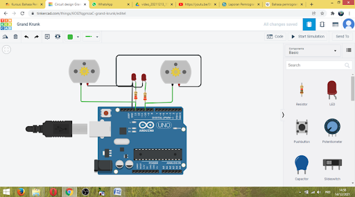
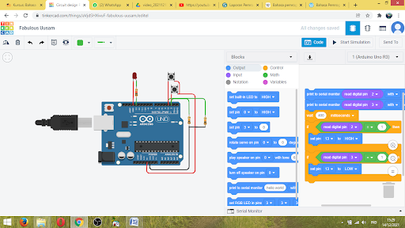
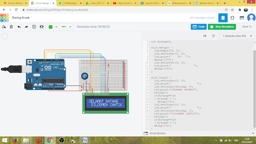
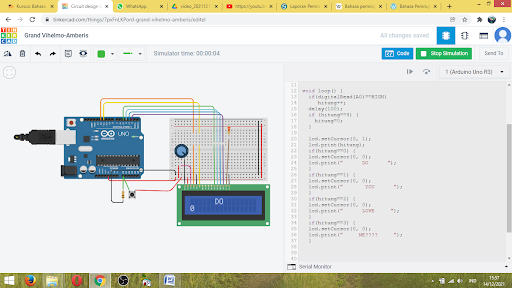

211313025 - Lubertus Tri Hardian P.
A. Pengertian
Sistem minimum mikrokontroler hanya sekumpulan komponen-komponen elektronika yang belum dapat dioperasikan. Agar dapat dioperasikan, haruslah terlebih dahulu dimasukkan program ke dalam IC mikrokontroler. Progam yang akan dimasukkan haruslah sesuai dengan tujuan dari sistem tersebut dibuat. Program tersebut akan disimpan ke dalam mikrokontroler pada bagian penyimpanan (memory). Ketika sistem dijalankan, maka baris per baris pada memory akan dibaca dan dijalankan instruksinya oleh keseluruhan sistem. Dengan demikian, barulah sistem tersebut dapat bekerja dengan baik.
Agar komputer memahami kehendak si perancang, maka program yang dimasukkan harus dipahami oleh sistem mikrokontroler. Oleh karena itu, diperlukan sebuah bahasa yang dipahami oleh si perancang dan juga mikrokontroler, yang disebut dengan Bahasa Pemrograman.
Bahasa Pemrograman, atau sering diistilahkan juga dengan bahasa komputer, adalah teknik komando/instruksi standar untuk memerintah komputer.
B. Proses Pembuatan
1. Projek #2
- Kita diminta untuk mengerti paham dan dapat menggunakan Tinkercad
- kita membuka Dasbord Tinkercad
- kita memilih arduino Uno R3
- pilih juga LED
- dan resistor dengan ukuran 220 Ohm
- klik Star simulasi maka LED akan berkedip secara bergantian
Didalam link vidio tersebut (#2) kita ditunut dapat mampu menggunakan tinkercad membuat projek yang telah diajarkan dan dapat berjalan sesuai yang di inginkan.
2. Projek #3
Didalam gambar dokumentasi tersebut kita mampu menghidupkan LED dan mematikan dengan menggunakan dua switch,dengan menggunakan program ataupun Code.
Link Google Drive: https://drive.google.com/file/d/107hH5vni7h8SmqXl_2lCe9EKZ97LBUDf/view?usp=drivesdk →3. Projek #4

Didalam projek tersebut #4 kita mampu memahami output dan input yang terdapat di arduino kita membuat rangkaian,disini kita menggunakan switch untuk dipasang dalam rangkaian Input dan menggunakan LED yang di gunakan dalam Outpunya.
Link Google Drive: https://drive.google.com/file/d/10talskOhf8hHhy4DcODdw5AgnHLFWWGc/view?usp=drivesdk →4. Projek #5
Di gambar tersebut kita paham bahkan mengerti code yang dapat memerintah atau menjalankan di dalam Arduino yang kita pilih.
Link Google Drive: https://drive.google.com/file/d/10uGqZjYzki70ZObvBsUJHdOc7lMZ2fIZ/view?usp=drivesdk →5. Projek #6
Digambar tersebut kita juga dapat menjalankan perintah dengan kita tambah switch,dan perintah dapat berjalan sesuai yang kita harapkan.
Link Google Drive: https://drive.google.com/file/d/10zVitBEqNMKCvFdBenotJM0j-U2WQqr3/view?usp=drivesdk →